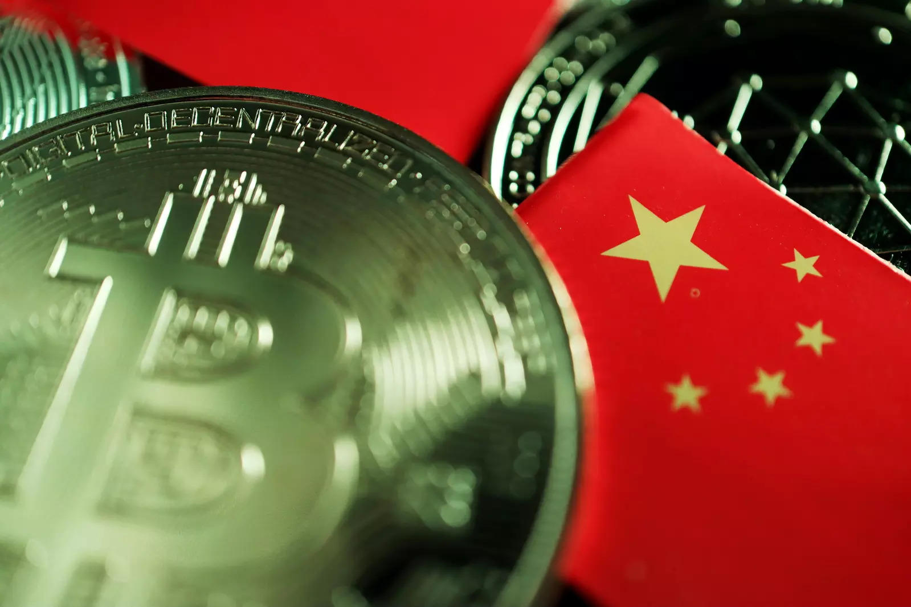

<!DOCTYPE html>
<html>
  <head>
    <link rel="stylesheet" href="index.css">
    <link rel="stylesheet" href="https://cdn.jsdelivr.net/npm/bootstrap@4.6.1/dist/css/bootstrap.min.css"> 
  
   
     <script src="https://cdn.jsdelivr.net/npm/jquery@3.5.1/dist/jquery.slim.min.js"></script>
    
    
    <script src="https://cdn.jsdelivr.net/npm/popper.js@1.16.1/dist/umd/popper.min.js"></script> 
    
    
    <script src="https://unpkg.com/react@17/umd/react.development.js" crossorigin></script>
    <script src="https://unpkg.com/react-dom@17/umd/react-dom.development.js" crossorigin></script>
    <script src="https://unpkg.com/@babel/standalone/babel.min.js"></script>
  </head>
  <body class="body">

    <div id="mydiv"></div>

    <script type="text/babel">
      function News2() {
        return(
<div >
        
        <nav class="navbar navbar-expand-sm bg-dark navbar-dark sticky-top mt-0">
        <a class="navbar-brand brand" href="#">BIT MARK</a>
        <a class='nav-link n_link' href='index2.html'>Home</a>
         <a class='nav-link n_link' href='market.html'>Market News</a>
        <a class='nav-link n_link' href='about.html'>About us</a>
       
        
      </nav>
        <div class='container' style={{color:'white'}}>
          <h1>China vows to crack down on bitcoin mining, trading activities</h1>
          
    <article>
        <h1>Net inflows imply investor intention to sell, while consistent outflows represent strong holding sentiment.</h1>
        <p>HONG KONG, May 21 (Reuters) - China will crack down on bitcoin mining and trading activities as part of efforts to fend off financial risks, the State Council's Financial Stability
             and Development Committee said on Friday.</p>
           <p>The country will also clamp down on illegal activities in the securities market, and maintain the stability of stock,
                bond and forex markets, the committee said in a meeting chaired by Vice Premier Liu He.</p>
                <p>The statement, which comes just days after three Chinese industry bodies tightened a ban on banks and payment companies providing crypto-related services, marks a sharp escalation of
                     moves against virtual currencies. read more</p>
                     <p>Liu is the most senior Chinese official to publicly order a crackdown on bitcoin, and it is the first time the state council has
                          explicitly targeted crypto mining activities.</p>
                          <p>Bitcoin prices fell sharply again on the news and are on course for weekly losses of more than 15%, as is Etherium .</p>
            <p>Investor protection and prevention of money laundering are particular concerns of governments and financial regulators who
                 are grappling with whether and how they should regulate the cryptocurrency industry.</p>
                 <p>
                    HONG KONG, May 21 (Reuters) - China will crack down on bitcoin mining and trading activities as p
                    art of efforts to fend off financial risks, the State Council's Financial Stability and Development Committee said on Friday.
                    
                    The country will also clamp down on illegal activities in the securities market, and maintain th
                    e stability of stock, bond and forex markets, the committee said in a meeting chaired by Vice Premier Liu He.
                    
                    The statement, which comes just days after three Chinese industry bodies tightened a ban on ban
                    ks and payment companies providing crypto-related services, marks a sharp escalation of moves against virtual currencies. read more
                    
                    Liu is the most senior Chinese official to publicly order a crackdown on bitcoin, and it is th
                    e first time the state council has explicitly targeted crypto mining activities.
                    
                    Bitcoin prices fell sharply again on the news and are on course for weekly losses of more tha
                    n 15%, as is Etherium .
                    
                    Investor protection and prevention of money laundering are particular concerns of governments a
                    nd financial regulators who are grappling with whether and how they should regulate the cryptocurrency industry.
                    

                    Earlier, Hong Kong proposed the city's market regulator license cryptocurrency exchanges and only allow them to provide services to professional investors.</p>

                    <p>"While some degree of crypto regulation is inevitable, these overly restrictive policies will result in stifled opportunity and industry flight away from Asia,"
                         said Jehan Chu, managing partner at Hong Kong blockchain venture capital firm Kenetic Capital.

                    </p>
                    <p>China's state broadcaster CCTV on Friday warned against "systemic risks" of cryptocurrency trading in 
                        a commentary on its website.

                        "Bitcoin is no longer an investment tool to avoid risks. Rather, it's a 
                        speculative instrument," the broadcaster said, adding the cryptocurrency is a lightly-regulated asset
                         often used in black market trade, money-laundering, arms smuggling, gambling and drug dealings.</p>
    </article>
               
               
               </div>

        </div>
        ) 
      }

      ReactDOM.render(<News2/>, document.getElementById('mydiv'))
    </script>

  </body>
</html>
